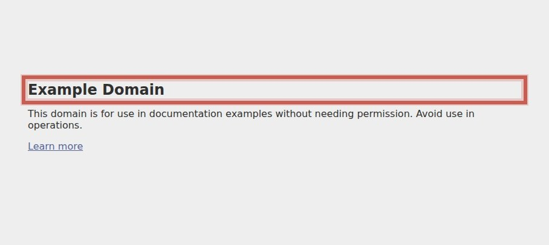
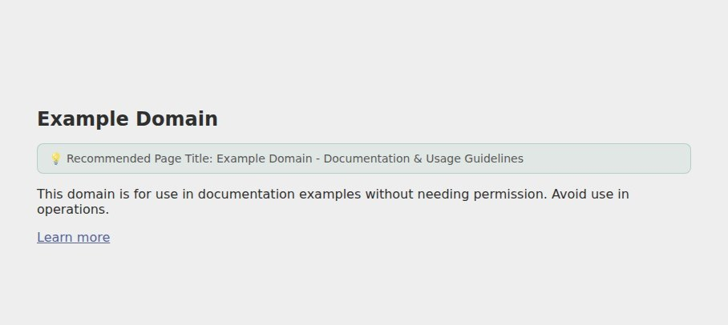

Search and social previews are degraded due to missing or poorly optimized page metadata.


| Question | Answer | Points |
|---|---|---|
| Is the change above the fold? | No | 0 |
| Is the change noticeable in under 5 seconds? | Yes | 2 |
| Does it add or remove an element? | Yes | 1 |
| Does it run on a high-traffic page? | Yes | 1 |
| Verified by direct technical measurement? | Yes | 1 |
4 of these could not be answered from the live page. Session recordings, survey or support themes, and analytics access would raise the confidence of this ranking — they do not indicate a weaker finding.
| Question | Answer | Points |
|---|---|---|
| Discovered via user testing? | No | 0 |
| Discovered via qualitative feedback (survey, support)? | No | 0 |
| Supported by heatmaps or session recordings? | No | 0 |
| Found via digital analytics or real-user field data? | No | 0 |
Result: 0.1 – 0.4 extra orders per 1,000 visitors
The 0.5–2.0% relative-lift band is an assumption bounded by severity (Medium), not a prediction.
The baseline conversion rate is an assumption — the client did not supply one, so an industry-typical 2.0% is used and labelled as such.
Why the range is conservative: Across 127,000 experiments, 12% produced a statistically significant improvement on the primary metric; a healthy programme win rate is 10-30%. Winning tests also overstate their true effect, so treat this as the prize if the change works — never expected revenue.
| Bracket | Days | Typical scope |
|---|---|---|
| Low | 0.5–2 | copy, colour, labels, image swaps |
| Medium | 2–5 | layout shifts, form changes, new modules |
| High | 5+ | personalisation, funnel work, integrations |
Assigned by matching the recommended change against these scopes; the estimate is a bracket, not a quote.
Two-proportion z-test, the standard pre-test sample-size calculation:
| Baseline conversion | 2.0% (assumed) |
| Significance / power | 95% / 80% |
| Sample per variant, 2.0% lift | 1,941,808 |
| Sample per variant, 0.5% lift | 30,842,948 |
Halving the minimum detectable effect roughly quadruples the sample required, which is why the conservative figure is so much larger.
PXL is CXL's prioritisation framework: binary questions instead of subjective 1–10 guesses, weighted toward evidence.
Findings discovered by inspection score zero on all four evidence questions — that is the honest signal, not a defect. Findings verified by direct measurement earn the extension point and, where real-user field data is involved, the analytics point.
The full rubric is on the method page.